李孟珂
毕业于 华中科技大学 产品设计系，目前就职于一家 工业人工智能 领域的公司。具备产品经理与UI/UX设计复合型能力，深耕 B 端工业软件、数据可视化及智能自动化工具，通过精密的界面美学与全栈的产品逻辑，化繁为简，实现复杂工业场景的无缝交互。
// CORE COMPETENCE
核心能力摘要
全链路界面设计
具备从需求理解、视觉定调、高保真设计到开发支持的全流程实践经验，主导近30个项目界面交付。
AI赋能工作流
熟练运用AI工具辅助设计探索与风格定调，擅长构建可复用设计系统，将设计素材管理、版本同步等重复性任务自动化，优化个人与团队工作效率。
跨界设计支持
拥有从0到1搭建品牌视觉体系的经验，掌握3D建模与视频剪辑等技能，具备产品、视觉、运营等多方面经验。
// SELECTED CASE STUDIES
精选项目深度解析
ARCHITECTURE & LOGIC FOCUS
中天项目 UI 设计规范系统
某大客户（工业制造领域）多套智能化管理系统的统一设计规范。制定色彩、组件、布局等完整设计系统，覆盖设备监控、文件管理、质量分析、告警中心等业务场景。
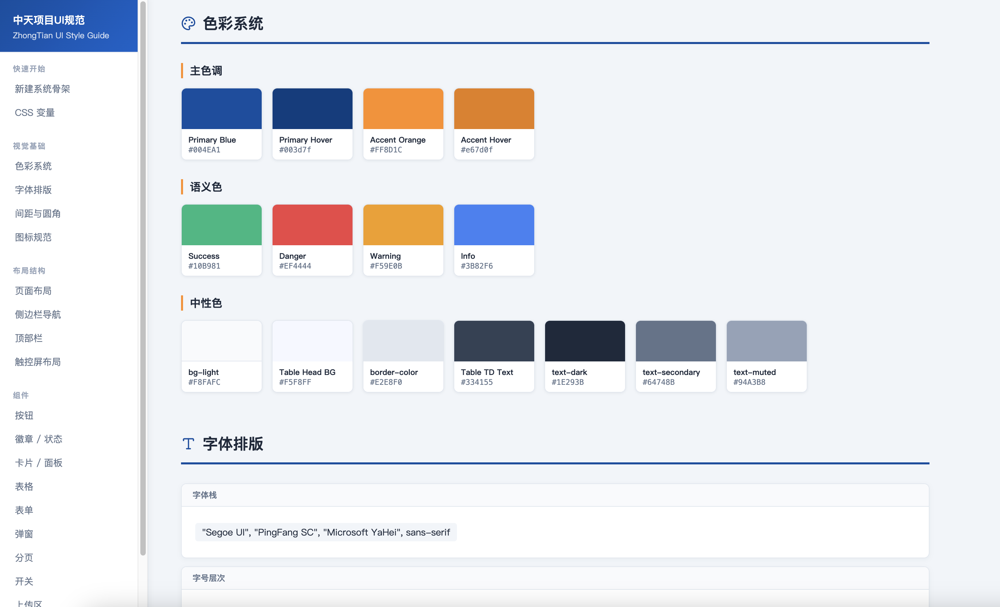
AI+异构能源智能微网管理系统
兆瓦级超级充电 AI+数字能源 多能融合的智能系统，全液冷系统，支撑兆瓦级充电；基于能源路由器架构，支撑多能融合；AI+智能调度，系统效率更优，能源利用性价比更高。

功能薄膜智慧工厂产线数字孪生系统
面向重工业拉膜生产车间，打通从原料处理、挤出、纵拉、横拉至收卷的全流程工业指令链，构建高密度信息吞吐的数字化集成指挥中心。通过低模 3D 模型与实时数据绑定，实现产线全流程可视化监控。
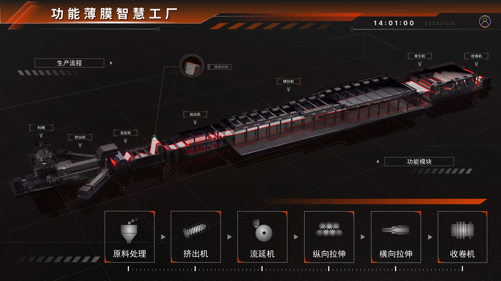
灵眸 —— AI视觉训推平台
面向 AI 算法团队的一站式训推控制台，打通模型仓库、模型训练、算法管理、硬件管理等核心业务生命周期。区别于传统机器学习平台的冰冷刻板感，注入"灵性"与"温度"。

// ADDITIONAL PROJECT REGISTRY (其他项目轮播)
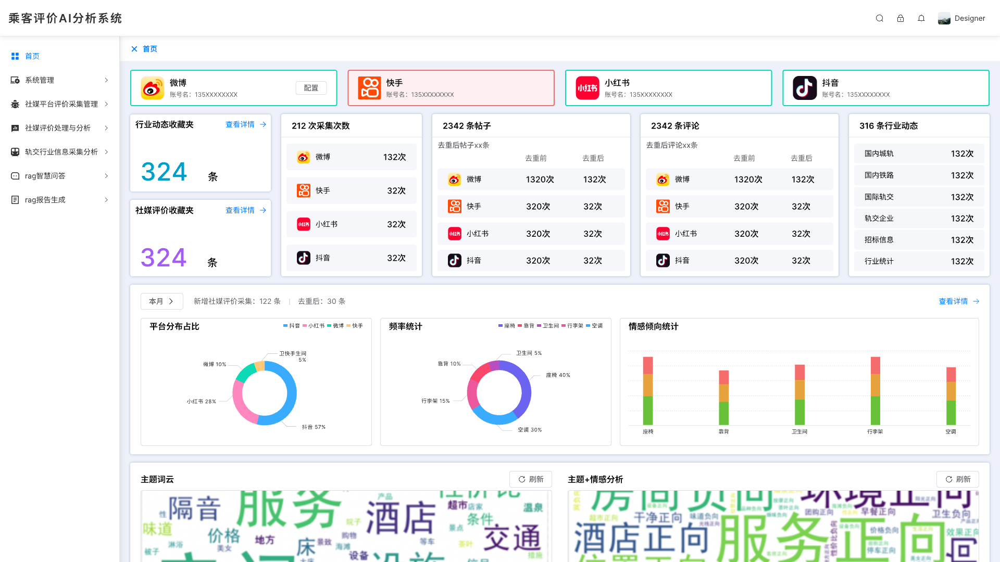
乘客舆情AI分析系统
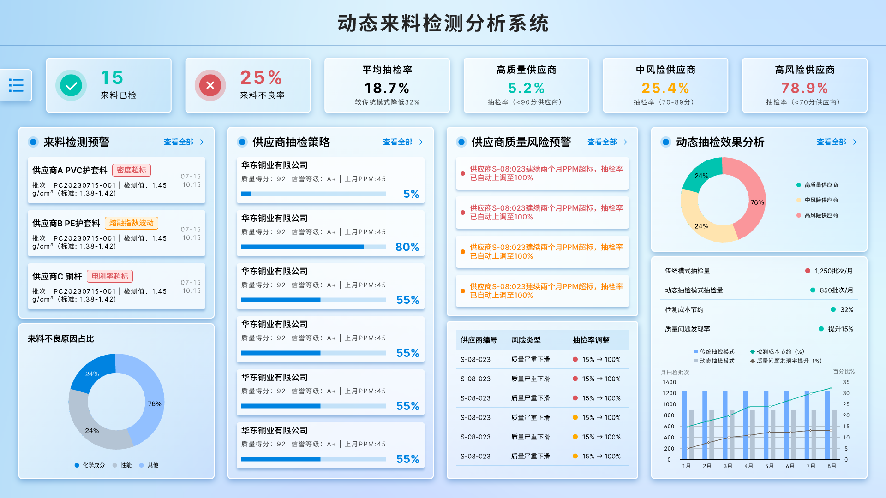
动态来料分析系统
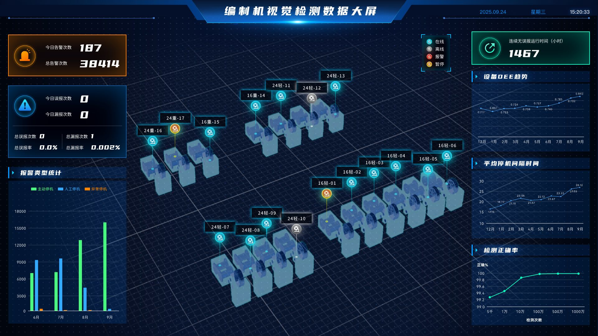
编织机视觉数据检测大屏
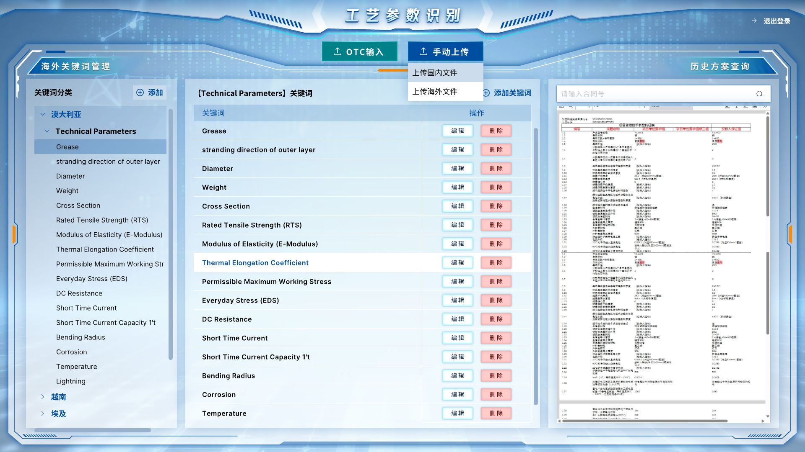
OCR工艺参数识别
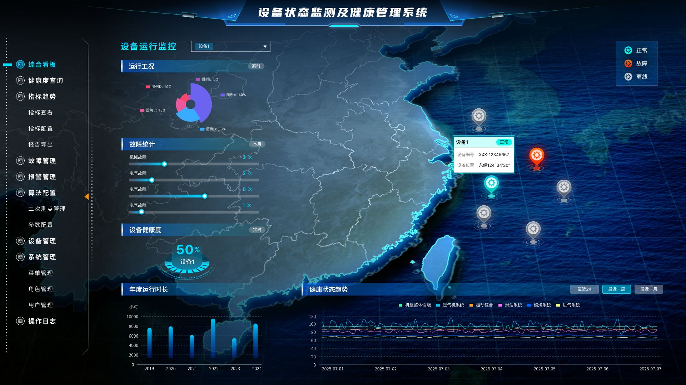
设备状态监测及健康管理系统
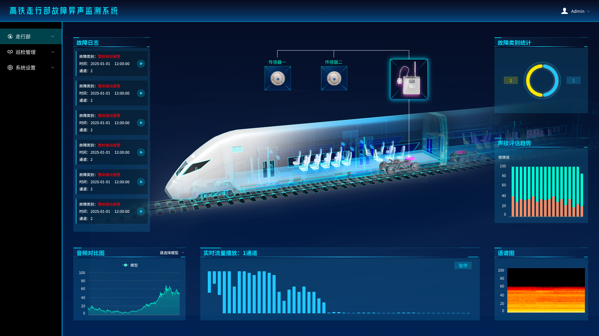
高铁故障异声监测系统
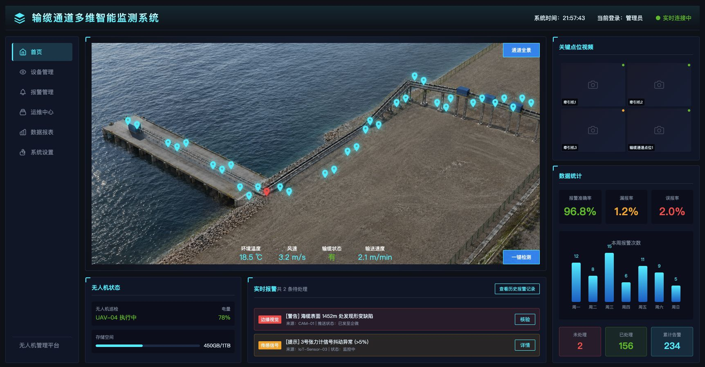
输缆通道多维智能监测系统
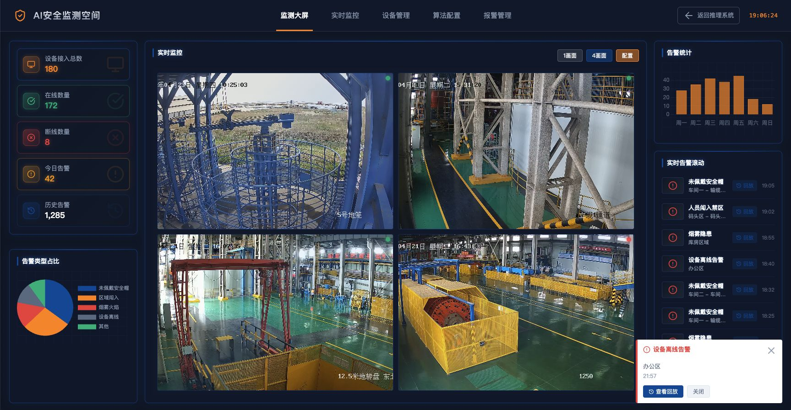
AI安全监测空间平台
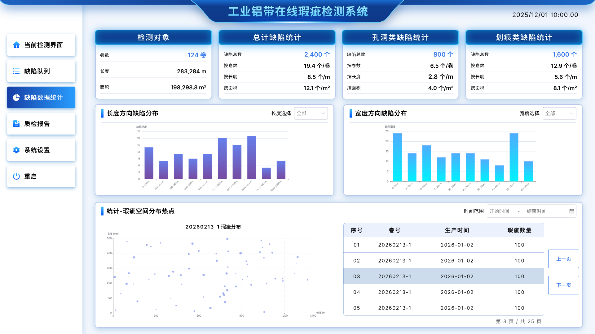
工业铝带瑕疵检测系统
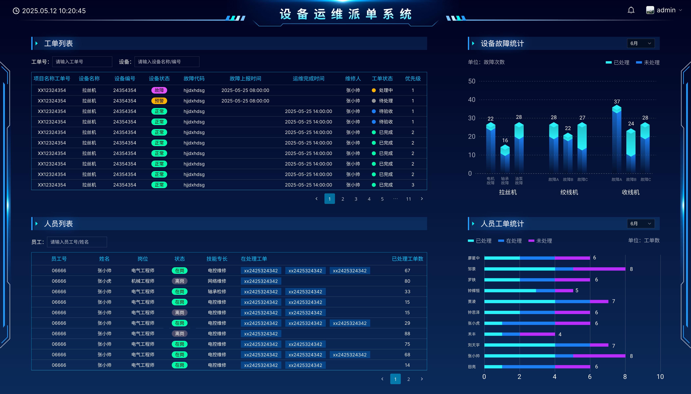
设备运维派单系统
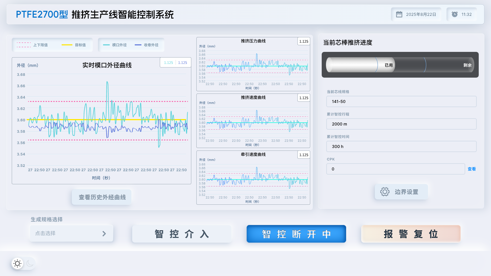
推挤生产线智能控制系统
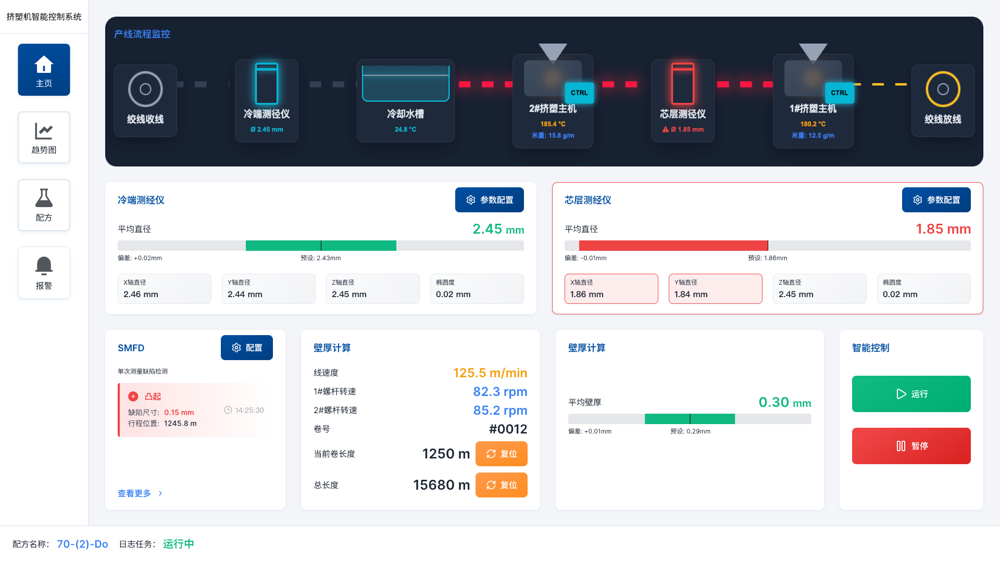
挤塑机智能控制系统
// SKILL RADAR MATRIX
相关技能
突破传统单一岗位的束缚，融合产品管理、UI/UX设计及AI工具应用能力，形成适应未来复杂产研环境的复合型技能矩阵。
// METRIC BACKING & TRUST
信任背书与关键成果
产研历练时长
深耕复杂工业软件及企业级系统界面全生命周期
深度打磨项目
涵盖机器视觉、大模型智能工作流、集控看板等
原型构建综合效率
使用 AI 工具链快速实现高保真代码化交付验证
// GET IN TOUCH
启动新连接
准备好将复杂的业务交给我了吗？欢迎通过以下渠道与我交流。